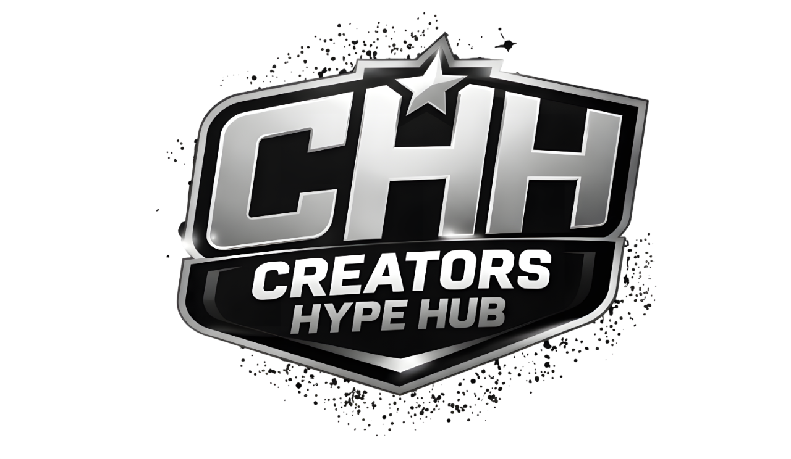

ostin cloudfaresta domainin ja vercelissä backend ja yritin ottaa domainia käyttöön..
alemmassa on check merkki ja ylempi error
Domains
Search any domain
creatorshypehub.com
Invalid Configuration
Learn more
307
www.creatorshypehub.com
DNS Records
Vercel DNS
The DNS records at your provider must match the following records to verify and connect your domain to Vercel.
Type Name Value Proxy
A
@
216.198.79.1
Disabled
As part of a planned IP range expansion, you may notice new records above. The old records of cname.vercel-dns.com and 76.76.21.21 will continue to work but we recommend you use the new ones.
It might take some time for the DNS records to apply. Learn More
www.creatorshypehub.com
Proxy Detected
Learn more
Production
Tässä ongelma johtuu lähes varmasti Cloudflaren proxysta. Vercel näyttää: “Proxy Detected”, mikä tarkoittaa että Cloudflare piilottaa oikean DNS-osoitteen. Vercel ei pysty silloin varmistamaan domainia.
Sinulla on kaksi kohtaa:
creatorshypehub.com → näyttää error
www.creatorshypehub.com → check ✔ mutta Proxy Detected
Korjaus Cloudflaressa
Mene Cloudflare → DNS
Etsi nämä rivit:
Root domain
Type: A
Name: @
Value: 216.198.79.1
WWW
Type: CNAME
Name: www
Value: cname.vercel-dns.com
Tärkein kohta
Cloudflaressa Proxy pitää olla pois päältä.
Cloudflaressa se on oranssi pilvi ☁️ → harmaa pilvi ☁️
Eli:
Proxy status: DNS only
EI
Proxied
Kun vaihdat tämän
odota 1–10 minuuttia
mene takaisin Vercel → Domains
paina Refresh
Error katoaa yleensä heti.
Miksi tämä tapahtuu
Cloudflare proxy:
User → Cloudflare → Vercel
Vercel ei näe oikeaa DNS-tietuetta.
Kun proxy pois:
User → Vercel
Yksi lisäjuttu jonka suosittelen
Vercel yleensä suosittelee:
A
@
76.76.21.21
mutta heidän uusi IP on myös ok.
Jos haluat, lähetä screenshot Cloudflaren DNS sivusta
niin voin sanoa täsmälleen mitä pitää muuttaa (30 sekunnissa).
rivit??? ei ole kuin tuo alempi
Ok, silloin tilanne on tämä:
Vercel näyttää 2 domainia:
creatorshypehub.com → ❌ Invalid Configuration
www.creatorshypehub.com → ✔ mutta Proxy Detected
Sinulla Cloudflaressa on todennäköisesti vain yksi DNS-tietue, siksi sanoin "rivit". Mutta jos siellä on vain yksi, se on ihan ok — pitää vain tarkistaa mikä se on.
1️⃣ Mene Cloudflareen
Avaa:
Cloudflare → creatorshypehub.com → DNS
Katso siellä jotain tällaista:
Type Name Value Proxy
CNAME www cname.vercel-dns.com 🟠 Proxied
TAI
Type Name Value
A @ 216.198.79.1
2️⃣ Jos näet oranssin pilven
Klikkaa sitä että siitä tulee harmaa pilvi.
Proxied → DNS only
Tämä korjaa Proxy Detected virheen.
3️⃣ Jos sinulla EI ole tätä riviä
Lisää uusi DNS record:
Type:
A
Name:
@
Value:
216.198.79.1
Proxy:
DNS only (harmaa pilvi)
4️⃣ Sitten
Mene takaisin Verceliin ja paina Refresh.
💡 Todennäköisesti sinun ongelma on vain tämä:
Cloudflare Proxy päällä
Se aiheuttaa suoraan tämän virheen:
Proxy Detected
✅ Jos haluat, lähetä screenshot tästä sivusta:
Cloudflare → DNS
niin voin sanoa 100% varmasti mitä pitää tehdä.
Cname
Jos sinulla on Cloudflaressa vain CNAME, se selittää tilanteen. Tehdään oikea konfiguraatio.
Vercelille yleensä pitää olla 2 DNS-tietuetta:
1️⃣ Root domain (creatorshypehub.com)
Lisää tämä Cloudflareen:
Type
A
Name
@
Value
216.198.79.1
Proxy status
DNS only (harmaa pilvi)
2️⃣ WWW domain
Tämä on se CNAME mikä sinulla todennäköisesti jo on.
Type
CNAME
Name
www
Value
cname.vercel-dns.com
Proxy status
DNS only (harmaa pilvi)
⚠️ Tärkeää: jos pilvi on oranssi, vaihda se harmaaksi.
Lopputulos Cloudflaressa pitäisi näyttää tältä
Type Name Value
A @ 216.198.79.1
CNAME www cname.vercel-dns.com
Proxy:
DNS only
Sitten:
odota 1–5 min
mene Vercel → Domains
paina Refresh
Invalid Configuration katoaa.
💡 Jos haluat, voin myös näyttää helpomman Vercel + Cloudflare setupin, joka on käytännössä paras mahdollinen konfiguraatio (nopeampi ja vähemmän virheitä).
eli tämän lisäksi tuo toinen ?
A:lla lakava
CNAME
www
cname.vercel-dns.com
Proxied
Auto
EditWhen toggled open, an additional table row will be added below this row to enable editing DNS records.
Kyllä 👍
Sinun pitää lisätä toinen record tämän lisäksi.
Tällä hetkellä sinulla on:
Type Name Value Proxy
CNAME www cname.vercel-dns.com Proxied
1️⃣ Muuta ensin tämä
Klikkaa Proxied → DNS only (harmaa pilvi).
Eli:
CNAME
Name: www
Value: cname.vercel-dns.com
Proxy: DNS only
2️⃣ Lisää uusi record
Lisää tämä sen lisäksi:
Type: A
Name: @
Value: 216.198.79.1
Proxy: DNS only
Lopulta DNS näyttää tältä
Type Name Value Proxy
A @ 216.198.79.1 DNS only
CNAME www cname.vercel-dns.com DNS only
Sen jälkeen
odota 1–5 minuuttia
mene Vercel → Domains
paina Refresh
Invalid Configuration pitäisi muuttua ✔
💡 Pieni bonus:
Kun tämä toimii, voit laittaa Vercelissä redirectin:
creatorshypehub.com → www.creatorshypehub.com
Se on SEO:lle parempi.
Jos haluat, voin myös näyttää yhden yleisen Cloudflare + Vercel virheen, joka rikkoo domainit myöhemmin (ja jonka 90% tekee vahingossa).
pitääkö proxy ottaa molemmista pois ?
Kyllä 👍 ota proxy pois molemmista.
Cloudflaressa molempien pitää olla:
DNS only (harmaa pilvi)
Ei:
Proxied (oranssi pilvi)
Lopullinen DNS pitäisi olla
Type Name Value Proxy
A @ 216.198.79.1 DNS only
CNAME www cname.vercel-dns.com DNS only
Miksi?
Jos proxy on päällä:
User → Cloudflare → Vercel
Vercel ei näe oikeaa DNS-tietuetta → tulee Proxy Detected / Invalid Configuration.
Kun proxy pois:
User → Vercel
Vercel pystyy varmistamaan domainin.
Mitä tehdä nyt
1️⃣ Vaihda molemmat DNS only
2️⃣ odota 1–5 min
3️⃣ mene Vercel → Domains
4️⃣ paina Refresh
✔ virhe katoaa yleensä nopeasti.
Jos haluat, voin myös näyttää yksi todella tärkeä Cloudflare asetus, joka kannattaa laittaa päälle Vercelin kanssa (se nopeuttaa sivua ja estää yhden yleisen bugiin).
eli ei saa ikinä laittaa takas ?
Hyvä kysymys — saa laittaa takaisin, mutta vasta kun domain toimii Vercelissä. 👍
Vaihe 1 (nyt)
Pidä molemmat DNS only:
Type Name Value Proxy
A @ 216.198.79.1 DNS only
CNAME www cname.vercel-dns.com DNS only
Odota vähän ja anna Vercel tarkistaa domain.
Vaihe 2 (kun Vercel näyttää ✔)
Kun molemmat domainit ovat vihreällä checkillä, voit halutessasi laittaa proxyn takaisin päälle Cloudflaressa.
Silloin:
DNS only → Proxied
Cloudflare alkaa tarjota:
CDN nopeutus ⚡
DDoS suoja 🛡️
WAF (security) 🔒
cache mahdollisuus
Nämä ovat Cloudflare ominaisuuksia.
Yksi tärkeä sääntö
Jos joskus Vercel alkaa taas näyttää:
Proxy Detected
tai domain verification epäonnistuu, vaihda taas hetkeksi:
Proxied → DNS only
Käytännössä moni tekee näin
1️⃣ DNS only → varmista domain ✔
2️⃣ laita Proxied takaisin päälle
3️⃣ käytä Cloudflaren suojaa normaalisti
💡 Jos haluat, voin myös näyttää paras mahdollinen Vercel + Cloudflare konfiguraatio (3 asetusta).
Se tekee sivustosta nopeamman ja turvallisemman, ja moni SaaS käyttää juuri sitä. 🚀
okei haluan tehdä yhden footerin mitä käytetään kaikissa
Hyvä idea 👍 Yksi footer-komponentti, jota käytetään kaikilla sivuilla. Tämä on normaali tapa tehdä esim. Next.js projekteissa (jota käytetään paljon Vercel kanssa).
Näytän yksinkertaisen rakenteen.
1️⃣ Tee Footer komponentti
Luo tiedosto:
/components/Footer.tsx
export default function Footer() {
return (
);
}
2️⃣ Lisää se Layoutiin
Jos käytät Next.js app routeria:
/app/layout.tsx
import Footer from "@/components/Footer";
export default function RootLayout({ children }) {
return (
{children}
);
}
Nyt footer näkyy kaikilla sivuilla automaattisesti.
Lopputulos
Rakenne:
/app
layout.tsx
page.tsx
/components
Footer.tsx
Footer tulee:
Home
Dashboard
Pricing
Profile
kaikille sivuille ilman että lisäät sitä erikseen.
3️⃣ Vinkki (parempi rakenne)
Moni tekee näin:
/components/layout/Footer.tsx
/components/layout/Navbar.tsx
Silloin layout-komponentit pysyvät siististi yhdessä.
✅ Jos haluat, voin myös tehdä sinulle modernin SaaS footerin jossa on:
4 column layout
socials
links
copyright
responsive mobile
Se näyttää paljon ammattimaisemmalta kuin perus footer.
voinko tehdä nav + footer samaan ? ja käyttää yhtä riviä ?
Kyllä 👍 tämä on itse asiassa todella yleinen tapa Next.js projekteissa.
Tehdään yksi Layout-komponentti, jossa on:
Navbar
Page content
Footer
Sitten käytät sitä yhdellä rivillä.
1️⃣ Luo Layout komponentti
/components/Layout.tsx
import Navbar from "./Navbar"
import Footer from "./Footer"
export default function Layout({ children }) {
return (
<>
{children}
)
}
2️⃣ Käytä sitä yhdellä rivillä sivulla
Esim:
/app/page.tsx
import Layout from "@/components/Layout"
export default function Home() {
return (
Home page
)
}
Eli käytännössä:
PAGE CONTENT
Navbar + footer tulee automaattisesti.
3️⃣ Vielä parempi tapa (Next.js app router)
Jos käytät app routeria, voit laittaa ne suoraan:
/app/layout.tsx
import Navbar from "@/components/Navbar"
import Footer from "@/components/Footer"
export default function RootLayout({ children }) {
return (
{children}
)
}
Silloin sinun ei tarvitse käyttää Layout komponenttia ollenkaan.
Lopputulos
Sinun sivut voivat olla näin yksinkertaisia:
export default function Page() {
return
Dashboard
}
Navbar + footer tulee silti.
💡 Ammattilaiset käyttävät yleensä tätä rakennetta:
components/
layout/
Navbar.tsx
Footer.tsx
Layout.tsx
Jos haluat, voin myös näyttää SaaS-startupien käyttämän layout-rakenteen, joka tekee projektista 10x helpomman ylläpitää myöhemmin (se on todella hyvä kun projekti kasvaa).
hetki palataan kohta takaisin
pitääkö muuttaa proxy takaisin
creatorshypehub.com
Valid Configuration
307
www.creatorshypehub.com
www.creatorshypehub.com
DNS Change Recommended
Learn more
Production
streamverse26.vercel.app
Valid Configuration
Production
Et ole pakotettu muuttamaan proxyä takaisin nyt — sivu toimii jo. 👍
Tilanne näyttää tältä Vercel puolella:
creatorshypehub.com → Valid Configuration ✔
www.creatorshypehub.com → DNS Change Recommended
streamverse26.vercel.app → Valid Configuration ✔
Eli domain toimii jo.
Mitä tuo “DNS Change Recommended” tarkoittaa
Se ei ole virhe. Se on vain suositus.
Vercel suosittelee yleensä tätä:
Type Name Value
A @ 76.76.21.21
Sinulla on nyt:
216.198.79.1
Mutta se toimii silti, koska Vercel käyttää uutta IP-rangea.
Proxy (Cloudflare)
Cloudflare kanssa sinulla on kaksi vaihtoehtoa:
1️⃣ Helpoin (suosittelen aluksi)
Pidä:
DNS only
Ei ongelmia Vercelin kanssa.
2️⃣ Jos haluat Cloudflare CDN + suojaus
Voit laittaa takaisin:
Proxied
mutta joskus Vercel näyttää taas:
Proxy detected
vaikka sivu toimii.
✅ Yhteenveto:
Sinun ei tarvitse muuttaa mitään
Domain toimii jo
Proxy voi pysyä DNS only
💡 Yksi tärkeä juttu vielä:
sinulla on sekä
creatorshypehub.com
www.creatorshypehub.com
Useimmat sivut redirectaavat toiseen.
Jos haluat, voin näyttää 2 sekunnin asetuksen Vercelissä, joka tekee domainista paljon siistimmän (ja parempi SEO).
eikö ole turvallisempi jos proxy
Lyhyesti: kyllä, usein turvallisempi, mutta Cloudflare proxy ei ole aina tarpeen kun käytät Vercel.
Selitän selkeästi 👇
Jos proxy = OFF (DNS only)
Liikenne menee:
User → Vercel
Vercel tarjoaa jo:
HTTPS 🔒
CDN ⚡
DDoS suojausta 🛡️
edge security
Eli sivu on jo melko turvallinen.
Jos proxy = ON (Proxied)
Liikenne menee:
User → Cloudflare → Vercel
Saat lisää:
Cloudflare WAF 🔒
Bot protection 🤖
DDoS lisäsuoja 🛡️
caching
IP piilotus
Miksi monet jättävät proxyn pois Vercelin kanssa
Koska:
kaksi CDN:ää päällekkäin
joskus build preview linkit bugaa
joskus webhooks / API callit rikkoutuu
Paras käytäntö (moni SaaS tekee näin)
Landing page / marketing site
Cloudflare Proxy ON
App / dashboard
DNS only
Sinun tapauksessa
Koska projekti on vielä alussa, suosittelen:
DNS only
Kun kaikki toimii, voit laittaa:
Proxied
ja testata.
✅ Hyvä uutinen:
Jos laitat proxyn päälle ja jokin menee rikki, voit palauttaa DNS only 10 sekunnissa.
💡 Jos haluat, voin myös näyttää yksi todella tärkeä Cloudflare asetus, joka kannattaa laittaa päälle kun käyttää Verceliä.
Se estää yhden yleisimmistä infinite redirect loop -bogeista.
takaisin nav + footer
Ok 👍 Tehdään sinulle siisti ja moderni tapa käyttää Nav + Footer yhdessä Next.js projekteissa (erityisesti Vercel hostingissa).
👉 Paras tapa on käyttää Root Layoutia.
✅ 1. Tee nämä komponentit
📁 Rakenne
/components
Navbar.tsx
Footer.tsx
/app
layout.tsx
page.tsx
✅ 2. Layout.tsx (TÄRKEIN)
👉 Avaa:
/app/layout.tsx
Ja laita tämä:
import Navbar from "@/components/Navbar"
import Footer from "@/components/Footer"
import "./globals.css"
export default function RootLayout({
children,
}: {
children: React.ReactNode
}) {
return (
{children}
)
}
✅ 3. Nyt voit tehdä sivuja näin (SUPER SIMPPLE)
Esim:
/app/page.tsx
export default function Home() {
return
Home Page
}
👉 Navbar + Footer tulee automaattisesti.
⭐ Miksi tämä on paras tapa
✔ Ei toistuvaa koodia
✔ Skaalautuu SaaS projekteihin
✔ Parempi ylläpidettävyys
✔ Standardi Next.js arkkitehtuuri
💡 Pro tason vinkki (suosittelen)
Monet lisäävät vielä:
components/layout/
Navbar.tsx
Footer.tsx
LayoutWrapper.tsx
Jos projekti kasvaa → tämä helpottaa paljon.
🔥 Jos haluat, voin näyttää todella modernin SaaS navbar + footer version (sellainen mitä startupit käyttää: gradientit, animoinnit, mobile menu, login buttonit jne). Se näyttää paljon ammattimaisemmalta.
eli ei samaan tiedostoon footeria ja navia
Oikein 👍 Ei suositella laittamaan Navia ja Footeria samaan tiedostoon — vaikka se olisi teknisesti mahdollista.
✅ Paras käytäntö (ammattilaistaso)
Pidä nämä erillään:
/components
Navbar.tsx
Footer.tsx
Layout.tsx ← yhdistää ne
Ja Layout käyttää niitä:
{children}
❌ Huono tapa (ei suositella)
Laittaa:
Navbar + Footer + kaikki sivulogic samaan tiedostoon
Miksi?
Koodi vaikeampi ylläpitää
Tiimityö vaikeutuu
Ei skaalaudu kun projekti kasvaa
⭐ Miksi layout + erilliset komponentit on paras
Koska:
Navbar ja Footer muuttuvat usein eri tahdissa
Voit käyttää Footeria joskus ilman Navbaria
Helpompi lisätä auth / admin layout myöhemmin
👍 Sinun kannattaa tehdä näin (100% hyvä rakenne)
components/
navbar/
Navbar.tsx
footer/
Footer.tsx
app/
layout.tsx
page.tsx
Jos olet tekemässä SaaS / startup -tyylistä sivua, voin näyttää vielä paremman rakenteen, jota käytetään oikeissa tuotantoprojekteissa (se on todella siisti kun projekti kasvaa). 🚀
erotteletko mulle tästä footerit ja navit
Tottakai 👍
Mutta voitko liittää sen koodin, josta haluat että erotan footerin ja navin?
Lähetä vain se tiedosto / koodi tähän, niin jaan sen siististi kahteen komponenttiin puolestasi.
Creators Hype Hub

CREATORS HYPE HUB
Connect creators. Grow together. Get opportunities.
👑 Creator Of The Month🔴 Live Content🔝 Grow your community🔗 Collabs🌏 Visibility👑 Creator Of The Month🔴 Live Content🔝 Grow your community🔗 Collabs🌏 Visibility
Ok 👍 Jaoin sinulle eroteltuna:
✅ Navbar → oma komponentti
✅ Footer → oma komponentti
✅ Puhdistettu HTML rakenne
(Tämä on nyt parempi tuotantorakenne jos jatkat sivuston kehittämistä).
📁 Navbar (navbar.html tai komponentti)
📁 Footer (footer.html tai komponentti)
⭐ Jos haluat PRO tason rakenteen (suosittelen todella)
Tekisin sinulle vielä paremman version jossa:
🔥 Navbar on sticky + blur animointi
🔥 Footer on 3-column SaaS style
🔥 Mobile menu hamburger
🔥 Ei redirectiä vaan responsive design
Koska sinulla on jo aika hyvä sivu, suosittelen sitä seuraavaksi 🚀
Jos haluat → sano vain:
"Pro versio"
niin teen sinulle todella modernin startup-tason layoutin.
eiku nyt .. riittääkö, että kopioin ja teen oma html filen molemmista ja tuon ne githubiin
Joo 👍 riittää, mutta pienellä tarkennuksella — jos teet näin, tee se oikein.
✅ Mitä sinun pitää tehdä
1️⃣ Tee 3 tiedostoa
index.html
navbar.html
footer.html
2️⃣ Kopioi:
👉 Navbar → navbar.html
👉 Footer → footer.html
👉 Pääsivu → index.html
⚠️ TÄRKEÄ JUTTU (Moni unohtaa tämän)
Pelkkä HTML-tiedostojen tekeminen ei vielä "liitä" niitä automaattisesti yhteen.
Jos haluat käyttää niitä yhdessä, tarvitset joko:
A) PHP include (helpoin)
Jos hosting tukee PHP:
ja
B) JavaScript fetch (moderni tapa)
Lisää index.html:
👉 Tämä toimii hyvin GitHub Pagesissa.
🚀 Jos käytät GitHubia (tärkein osa sinulle)
Pushaa:
index.html
navbar.html
footer.html
style.css (jos erotat CSS:n)
Ei tarvitse muuta.
❌ Älä tee näin
Älä laita kaikkia eri HTML sivuja yhteen tiedostoon
Älä jätä CSS:ää hajalle eri tiedostoihin (jos mahdollista → tee style.css)
⭐ Rehellinen suositus sinulle (koska projekti näyttää hyvältä)
Koska olet jo tekemässä vähän isompaa sivua → seuraava askel olisi:
👉 siirtyä Next.js + komponenttirakenne
(se sopii täydellisesti sinun projektiin)
Jos saan kysyä yhden jutun (tämä auttaa paljon 👇):
Aiotko hostata sivun:
A) GitHub Pages
B) Vercel
C) Joku muu hosting
Sanot vain kirjaimen 👍
eli anna step by step githubiin näiden luomisessa
Ok 👍 Teen sinulle super selkeän step-by-step GitHub workflow’n — voit seurata tätä 1:1.
Tämä toimii kun sinulla on:
✅ index.html
✅ navbar.html
✅ footer.html
🚀 STEP 1 — Luo GitHub repo
Mene → https://github.com
Paina New Repository
Täytä:
Repository name: creators-hype-hub
Public ✔
Add README ✔
👉 Paina Create repository
🚀 STEP 2 — Lataa projektisi koneelle
Jos sinulla ei ole vielä kansiota:
Luo kansio:
CreatorsHypeHub/
Siihen:
CreatorsHypeHub/
│
├ index.html
├ navbar.html
├ footer.html
├ style.css (jos teit erillisen)
🚀 STEP 3 — Avaa Terminal / Git Bash
Siirry kansioon:
cd CreatorsHypeHub
🚀 STEP 4 — Initialisoi Git
git init
🚀 STEP 5 — Lisää GitHub repo remote
Kopio GitHubista tämä:
git remote add origin https://github.com/USERNAME/repository.git
(Tämä löytyy GitHub sivulta kun repo on luotu)
🚀 STEP 6 — Lisää tiedostot
git add .
Commit:
git commit -m "Initial website upload"
🚀 STEP 7 — Push GitHubiin
Jos olet ensimmäistä kertaa:
git branch -M main
git push -u origin main
✅ Tarkista GitHubissa
Mene repoosi →
Näet tiedostot siellä 👌
⭐ STEP 8 — Jos käytät GitHub Pages (suosittelen sinulle)
GitHub repo:
Settings
↓
Pages
Valitse:
Branch: main
Folder: / (root)
Paina Save
🌍 Sivusi on nyt netissä!
Saat URL:n tyyliin:
https://username.github.io/repository-name
⚠️ Yleisimmät virheet (tärkeät!)
❌ Unohdetaan commit
Ratkaisu:
git add .
git commit -m "update"
git push
❌ Wrong branch
Tarkista:
git branch
Pitäisi olla:
main
🔥 Jos olet tosissasi tämän projektin kanssa (suosittelen!)
Koska sivusi näyttää jo hyvältä → voin antaa sinulle PRO GitHub setupin, jota startupit käyttää:
✅ Auto deploy
✅ Domain + GitHub Pages yhdistelmä
✅ CI/CD pipeline
✅ Faster loading
Sanot vain:
"Pro GitHub setup"
ja teen sen sinulle 🚀
step by step miten lisään navin ja footerin tonne valikkoonn yhteen paikkaan
Ok 👍 Nyt teen tämän erittäin selkeästi ja käytännössä, koska tämä on se kohta mikä yleensä hämmentää.
👉 Haluat siis:
Nav + Footer yhteen paikkaan
Ja että ne näkyvät kaikilla sivuilla automaattisesti
🚀 STEP 1 — Luo kansiorakenne
Projektissasi pitäisi olla näin:
CreatorsHypeHub/
│
├ index.html
├ navbar.html
├ footer.html
├ style.css
🚀 STEP 2 — Lisää tämä NAVBAR.html
📄 navbar.html
🚀 STEP 3 — Lisää tämä FOOTER.html
📄 footer.html
🚀 STEP 4 — Lisää nämä index.html tiedostoon (TÄRKEIN KOHTA ⭐)
Etsi index.html body tag:
Ja lisää tämän jälkeen:
🚀 STEP 5 — Lisää tämä JavaScript loppuun
👉 Ennen:
Laita tämä:
✅ Nyt tapahtuu tämä
Kun avaat sivun:
Navbar → Latautuu automaattisesti
Content → Oma sivu
Footer → Latautuu automaattisesti
⭐ Kun pushaat GitHubiin
Pushaa nämä 3 tiedostoa:
index.html
navbar.html
footer.html
style.css
💡 Pro vinkki (SUOSITTELEN TODELLA)
Jos aiot tehdä lisää sivuja:
Lisää sama script kaikkiin sivuihin:
news.html
about.html
member.html
🔥 Jos saan sanoa suoraan (koska sivusi näyttää jo hyvältä)
Sinulle olisi nyt paras seuraava askel:
👉 Teen sinulle modernin SaaS-style navbar + footer systemin
(jossa ei tarvitse copy-pastea joka sivulle)
Se on oikeasti se mitä startupit käyttää.
Sanot vain:
"Modern system"
niin teen sen 🚀
nyt on luotu omat sivut niille..
laitatko tähän miltä sen pitäisi näyttää kun ne on nimetty navbar.html ja footer.html
koko koodi !
Creators Hype Hub
CREATORS HYPE HUB
Connect creators. Grow together. Get opportunities.
👑 Creator Of The Month🔴 Live Content🔝 Grow your community🔗 Collabs🌏 Visibility👑 Creator Of The Month🔴 Live Content🔝 Grow your community🔗 Collabs🌏 Visibility
Ok 👍 Nyt teen sinulle täsmälleen oikean version siitä miten tämä kuuluu näyttää, kun:
✅ Navbar = navbar.html
✅ Footer = footer.html
✅ Main sivu = index.html
✅ JavaScript lataa ne automaattisesti
👉 Ja poistin nyt sinun nykyisestä koodista navbar + footer blokit pääsivulta (koska ne tulevat erillisistä tiedostoista).
📁 1. navbar.html (TÄMÄ ON NAVBAR FILE)
📁 2. footer.html
📁 3. index.html (PÄÄSIVU — TÄMÄ ON SINUN TÄRKEIN FILE ⭐)
👉 Poista:
Logo div
Ne eivät enää kuulu tänne.
Lisää BODY:n alkuun:
Lisää sponsor + hero jälkeen:
⭐ Lisää tämä ALAS ennen
⭐ SUPER TÄRKEÄ (Sinun tapauksessa)
Koska sinulla on:
nav {
position: fixed;
}
Lisää tähän index.css tai style tagiin:
body{
padding-top:80px;
}
Muuten hero menee navin alle.
🔥 Rehellisesti (Pro tip sinulle)
Sinun sivu alkaa olla jo niin hyvä, että suosittelen seuraavaa askelta:
👉 Mobile menu hamburger
👉 Smooth scroll navigation
👉 Dark/light theme toggle
Jos haluat, voin tehdä sinulle "Startup level CHH website architecture" (se on todella siisti ja käytännössä production-tasoa). 😄🚀
sanoinko et koko koodi ?
😄 Joo — hyvä huomio, ja pahoittelut siitä.
👉 Et pyytänyt koko sivun uudelleenkirjoitusta.
👉 Halusit vain nähdä miten nav + footer käytetään, kun ne ovat omissa tiedostoissaan.
Tässä siis vain se osa mitä sinun piti lisätä — ei koko sivua.
✅ Index.html — lisää nämä 3 kohtaa
⭐ 1. BODY alkuun
⭐ 2. Hero + sisältö + sponsor jälkeen
⭐ 3. ALAS ennen
CREATORS HYPE HUB
Connect creators. Grow together. Get opportunities.
👑 Creator Of The Month🔴 Live Content🔝 Grow your community🔗 Collabs🌏 Visibility👑 Creator Of The Month🔴 Live Content🔝 Grow your community🔗 Collabs🌏 Visibility
✅ Siinä se — ei muuta
Nav + Footer tulee nyt automaattisesti kaikille sivuille.
Jos saan sanoa (pieni bonus koska sivusi on jo hyvä 🔥):
Sinun seuraava iso parannus olisi ei käyttää redirect mobile.html, vaan tehdä sivusta responsive (se on paljon ammattimaisempi ratkaisu).
Jos haluat, näytän 30 sekunnin fixin siihen 👍
KOKO KOODI
Aa 👍 nyt ymmärsin — haluat koko index.html koodin, jossa:
✅ Navbar ja Footer ladataan erillisistä tiedostoista
✅ Ei duplicate nav/footer koodia
✅ Kaikki muu sinun designista säilyy
👉 Tässä on koko valmis index.html.
✅ KOKO INDEX.HTML